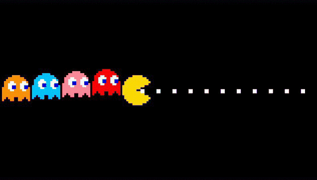

Power JV Lab

RECRÉATION JOYSTICK FAIRCHILD CHANNEL F
Travaille actuellement sur la recréation complète du joystick de la Fairchild Channel F.
REVERSE ENGINEERING
PS2 EYETOY: CHAT
Analyse du trafic réseau et rétro-ingénierie des serveurs Medius/SCERT. Compilation d'exécutables ELF avec le PS2SDK pour restaurer les fonctionnalités en ligne.
APPLE II EUROPLUS
& ECRANS CRT
Restauration d'alimentations Astec (suppression des condensateurs RIFA) et maintenance de moniteurs cathodiques Thomson et Sony Trinitron.
APPLE IIe
Périphériques : Joystick.
APPLE II EUROPLUS
Périphériques & Extensions : Diverses cartes d'extension mémoire et vidéo, carte UHF SECAM composite, 2 lecteurs de disquettes.
APPLE IIc
Périphériques : Souris officielle.
APPLE POWERBOOK 140
Accessoires : Sacoche de transport, lecteur de disquettes externe 3.5".
ATARI 800XL
Périphériques : Lecteur de cassettes (K7).
COMMODORE AMIGA 500
Extensions : Extension mémoire.
THOMSON MO5
Périphériques & Extensions : Lecteur K7 MO5, extension mémoire 64K, extension musique et jeux, extension RS232, extension incrustation vidéo.
THOMSON MO6
Périphériques & Extensions : Lecteur K7 intégré, compatible extensions musique et jeux, RS232 et incrustation vidéo.
THOMSON TO7
Périphériques & Extensions : Lecteur K7 TO7, extension mémoire 16K, extension musique et jeux, extension RS232, extension incrustation vidéo.
THOMSON TO7/70
Périphériques & Extensions : Lecteur K7 TO7, extensions musique et jeux, RS232 et incrustation vidéo.
THOMSON TO8
Périphériques & Extensions : Lecteur de disquettes 3.5" TO8, extensions musique et jeux, RS232 et incrustation vidéo.
MATRA ALICE 32
Périphériques & Extensions : Lecteur K7, extension joystick, extension télématique Minitel.
MATRA ALICE 90
Périphériques & Extensions : Lecteur K7, extension joystick, extension télématique Minitel.
MICRONIQUE HECTOR 2HR
Périphériques : Magnétophone intégré, joystick officiel.
MICRONIQUE HECTOR 2HR+
Configuration & Périphériques : Basic III intégré, magnétophone intégré, joystick officiel.
MICRONIQUE VICTOR 2HR
Périphériques : Magnétophone intégré, joystick officiel.
ORIC-1
Configuration : Unité centrale.
ORIC ATMOS
Configuration : Unité centrale à clavier mécanique.
CAMPUTERS LYNX 48K
Configuration : Modèle 48K.
AMSTRAD CPC 464 (TOUCHES HAUTES)
Périphériques : Moniteurs monochrome et couleur, tuner TV, adaptateur MP3, lecteur de disquettes DD1, joystick officiel.
AMSTRAD CPC 464
Périphériques : Moniteurs monochrome et couleur, tuner TV, adaptateur MP3, lecteur de disquettes DD1, joystick officiel.
AMSTRAD CPC 6128
Périphériques : Moniteurs monochrome et couleur, tuner TV, adaptateur MP3, joystick officiel.
SINCLAIR ZX81
Périphériques & Extensions : Extension mémoire 16K, extension joystick.
SINCLAIR ZX SPECTRUM+
Configuration : Unité centrale à clavier mécanique.
SINCLAIR ZX SPECTRUM +2
Périphériques : Magnétophone Datacorder intégré, joystick officiel +2.
SINCLAIR QL
Configuration : Unité centrale avec lecteurs Microdrive.
SINCLAIR PC200
Configuration : Unité centrale compatible PC.
COMMODORE VIC-20
Périphériques : Lecteur de disquettes, 2 lecteurs K7 (VIC-20 / C64).
COMMODORE 64 (C64)
Périphériques : Lecteur de disquettes, 2 lecteurs K7 (VIC-20 / C64).
COMMODORE 128 (C128)
Périphériques : Lecteur de disquettes, lecteur K7.
EXELVISION EXL 100
Périphériques & Extensions : Clavier mécanique sans fil, extension modem, joystick, lecteur de K7 officiel.
SPECTRAVIDEO SVI-328
Périphériques : Lecteur de K7 officiel Spectravideo, joystick Spectravideo.
MSX SONY HB-501F
Périphériques : Lecteur K7 Bitcorder intégré.
MSX 2 PHILIPS VG-8245
Périphériques : Lecteur de disquettes 3.5" intégré.
PHILIPS VG5000
Périphériques & Extensions : Extension VG5216, extension joystick, joystick, lecteur de K7 officiel.
SEGA SC-3000H
Périphériques : Clavier mécanique, joystick officiel, lecteur de K7 officiel.
SHARP MZ-700
Configuration : Unité centrale.
ACORN ELECTRON
Extensions : Extension Plus 2 (+2).
TANDY COCO 2 (64K)
Périphériques : Joystick officiel, lecteur de K7 officiel.
DRAGON 32
Configuration : Unité centrale 32K.
FAIRCHILD CHANNEL F
Première console de jeux vidéo programmable à cartouches ROM de l'histoire.